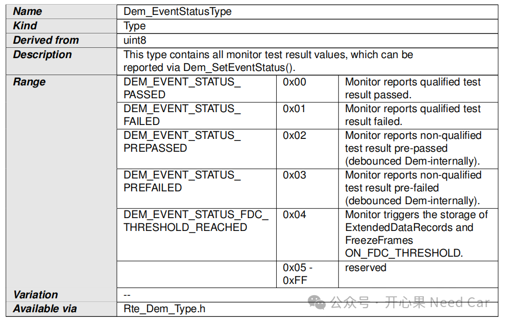
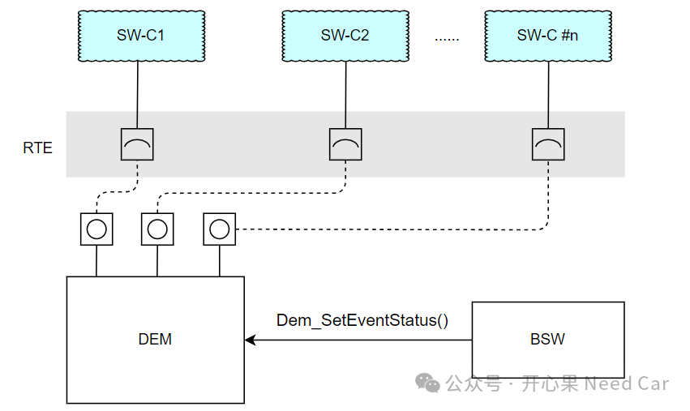
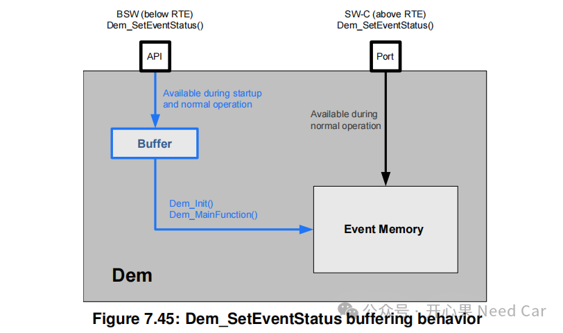
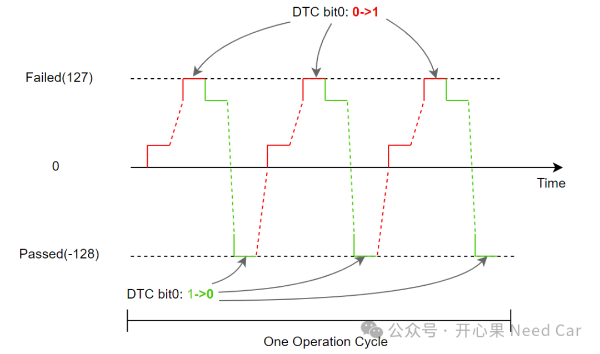
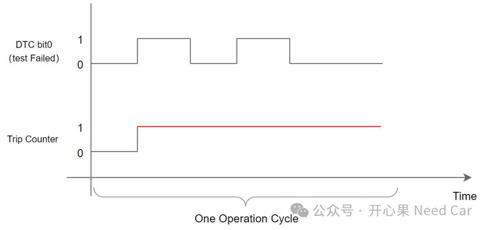
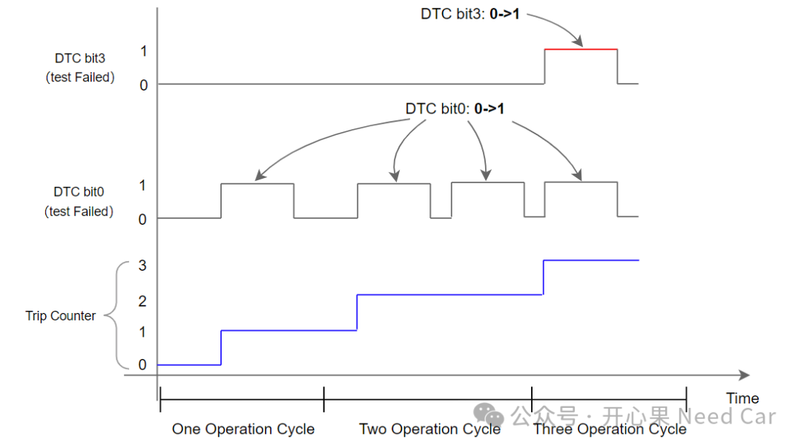

开心果 Need Car · 2024-04-07T11:55:00+08:00 · 微信原文
搞诊断开发的小伙伴，对于事件（Event）状态应该并不陌生。在Event状态的讨论中，很多时候我们是在讨论Autosar DEM（Diagnostic Event Manager）规范中的事件状态。但是，有些小伙伴有时会与UDS（Unified diagnostic services）的DTC（Diagnostic Trouble Code）状态（Status）混淆。所以，本文聊一聊Event状态、DTC状态到底是怎么一回事，Event状态又是如何影响DTC状态变化的？
1、事件（Event）状态
在DEM规范中，事件状态包含五种状态：DEM_EVENT_STATUS_PASSED、
DEM_EVENT_STATUS_FAILED、DEM_EVENT_STATUS_PREPASSED、DEM_EVENT_STATUS_PREFAILED、DEM_EVENT_STATUS_FDC_THRESHOLD_REACHED。具体描述如下所示：



如上图，在软件初始过程中，某些模块（主要指BSW）初始化错误（eg：某驱动模块），但是DEM还没有正常工作，不能处理上报的事件状态。此时，故障模块可以将对应事件状态缓存（Buffer）起来，等到DEM被正常调度后，处理缓存的事件状态。
2、DTC状态
按照UDS规范的解释，DTC状态由一个字节（1 byte）的8个bit位表征故障状态。关于每个bit的具体含义，可以参考前文《Autosar DEM诊断事件管理（一）》。
DTC不同状态bit的变化又因Event状态变化而触发，两者更详细的变化规律可以参考前文《Uds诊断：不同Operation Cycle下的DTC状态位变化》。
本文着重聊一下UDS故障状态的bit0和bit3关系。
DTC bit0（test Failed）：侧重描述当前驾驶循环中，被监控事件（Event）是否成熟（matured）。也就是说：被监控事件（eg：蓄电池欠压事件）经过去抖（debunce）处理后，确认故障真实发生（eg：蓄电池电压＜6V，持续1s），该bit状态由0->1变化。在一个驾驶循环内，被监控事件可以多次成熟，所以，DTC bit0可以多次由0->1变化，示意如下：

DTC bit3（confirmed DTC）：侧重描述故障是否确认。而故障的确认需要满足故障的确认阈值（Confirmation Threshold），对于Confirmation Threshold，UDS的规范中用Trip Counter表征。也就是说，Trip Counter≥指定阈值（用户自定义）以后，DTC bit3由0->1变化。而Trip Counter与驾驶循环关联，即：一个操作循环内，Event多次成熟，即使DTC bit0多次由0->1，Trip Counter也只累加一次，示意如下：

一般来说，对于non-OBD场景，Trip Counter一般设置为1，即：一个驾驶循环内，Event成熟，DTC bit0由0->1变化，Trip Counter = 1，进而DTC bit3由0->1变化；对于OBD场景，Trip Counter一般设置＞1（eg：3），即：每个驾驶循环内，DTC bit0均至少经历一次0->1变化，Trip Counter累加1，当Trip Counter = 3后，DTC bit3由0->1变化。
对于OBD场景，Trip Counter、DTC bit0、DTC bit3变化，示意如下：

如上图，每个驾驶循环结束后，Trip Counter需要存储非易失内存（NVM，
Non volatile Memory），以便于下一个驾驶循环可以基于上次的计数进行操作。
参考资料
（1）Specification of Diagnostic Event Manager AUTOSAR CP Release 4.4.0
往期精彩回顾
Bootloader开发：并列刷写(Parallel Flash)你知道多少？